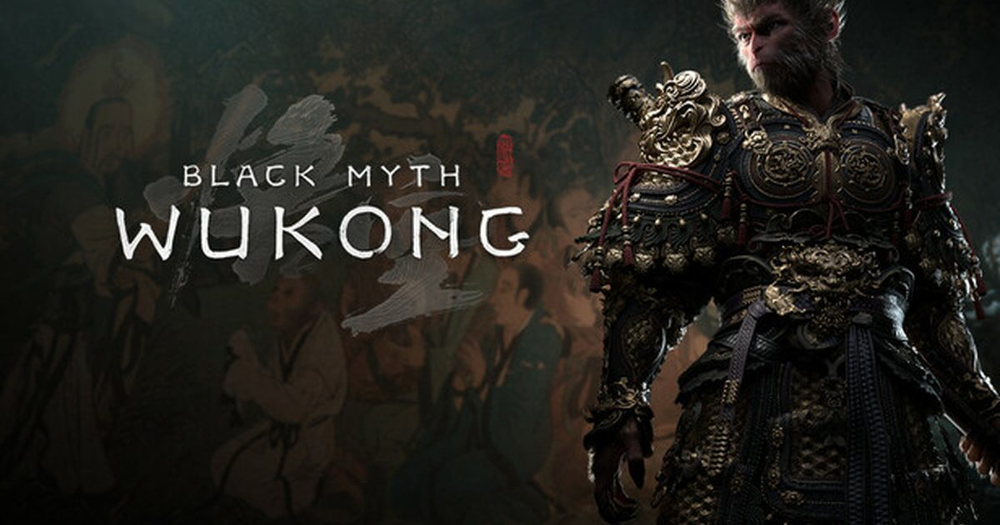

2026-08-20 · 单机观察
每年 8 月 20 日，游科（Game Science）的粉丝都会条件反射般地屏住呼吸。2020 年的 13 分钟实机、2024 年的《黑神话：悟空》全球发售、2025 年的《黑神话：钟馗》CG 首曝——这个被玩家自封为"820 传统"的日子，今年又到了。但就在节点前夕，美术总监杨奇亲自下场"降温"：别指望实机，最多一段 CG 短片。与此同时，《黑神话：悟空》却悄悄打起了 30% 的折扣。一冷一热之间，藏着这家公司最反直觉的一套打法。

游科的 820 不是官方节日，是玩家用六年时间喂出来的肌肉记忆。2020 年 8 月 20 日，13 分钟 Pre-Alpha 实机一拳把国产动作游戏抬进主流视野；2021 年同日的 UE5 演示、2022 年的剧情过场、2023 年科隆实机试玩、2024 年《悟空》正式发售——几乎每个 820 都有"干货"。2025 年 8 月 19 日（因时差在国区算 8/20），《黑神话：钟馗》在科隆开幕夜以一段 CG 短片首次公开，官方自己都承认那是"刚开始、还没有可玩内容"的立项宣告。
所以今年 8/20 到来前，社区里"钟馗会不会放实机""会不会公布发售日"的猜测早就炸了。结果杨奇在社交平台直接泼了盆温水：今年的 820，"大概率只是一段简短的 CG 短片，不是对玩法或剧情的深挖"。他甚至把这次活动形容成"老朋友之间的一次小聚"，说团队时间紧，"只能勉强凑点边角料"。换句话说——别期待，但别失望，因为我们本来就没什么能端上桌的。
把今年 820 已知的信息摊开看，其实有两块内容，一块是"明牌"，一块是"暗牌"。明牌是杨奇口中的 CG 短片——大概率延续钟馗立项预告那种非遗官方影片质感，用来证明项目"活着、在推进"，而非展示战斗系统。暗牌则是《黑神话：悟空》从 8 月 12 日开始的 30% 折扣，覆盖 PS Store、Microsoft Store、Steam、Epic 和 WeGame。
有意思的是官方的措辞："先打折"（perform the discount first）。玩家立刻把这句话读成了"后面还有一场表演"——潜台词似乎在说，先把前辈请下车，再给后辈铺路。折扣本身不稀奇，但放在 820 前两周这个时点，它客观上把"要不要趁便宜补悟空"变成了一个绕不开的入场问题：想跟上钟馗的观众，先补完悟空似乎成了顺理成章的选择。
还有个常被忽略的线索：音乐总监李佳琪此前受访时说过，钟馗和悟空是"两个完全不同的故事"，风格差异很大；钟馗的叙事和角色"更市井、更贴近日常"，音乐也会"更轻、更幽默"。对比悟空那种肃穆神话与压迫感十足的空间，下一作主动往"日常幽默"靠，意味着它的演出与配乐都要跟着拐弯。换句话说，玩家期待的不只是"换张皮的悟空"，而是一个气质不同的新世界。
在如今这个"没实机先开预购、没做完先放 CG 画饼"成为常态的行业里，游科的操作是反向的：核心没准备好，就绝不上台。这不是高冷，是它用《悟空》的技术底座赚来的底气。一款 AAA 动作游戏，从 2025 年 8 月的 CG 立项到真正能拿出可玩 Demo，按它自己的节奏，现实窗口至少要到 2027——哪怕最压缩的算法也撑不到 2026。所以今年只给 CG，不是"藏"，是"真没有"。
这种"不画饼"的代价是热度会被稀释，好处是信任不会被透支。对比那些靠概念 trailer 拉满期待、发售即翻车的案例，游科选择让玩家"等一个能打的成品"。更现实的是，悟空刚发售不久，玩家对"下一个 Black Myth"的耐心本就充足——比起被赶工的半成品砸了招牌，更多人愿意为了打磨好的游戏多等一会。把 820 当成一场"老朋友小聚"而非"产品发布会"，反而让期待保持在一个健康水位。
而那句"先打折"，本质上是一套低成本的预期管理：用前辈的折扣把注意力拢过来，再用一段 CG 证明后辈"项目健康"，既不空耗期待，也不透支信用。对一家以技术口碑立身的工作室而言，这比盲目冲一个不成熟的首曝要稳得多。
我们的评分 期待管理 9.0 / 信息量 6.5。扣的分不是因为没实机，而是这波信息密度确实低——目前仍是"预告级"，具体尺度要等真正首曝。
我们的观察 杨奇亲自降温，比任何"官方神秘感"都更稀缺。在一个把"预热"做成产业的圈子里，敢说"我只有边角料"的工作室，反而值得多信一分。
我们的观点 钟馗的难点从来不是"做不做得出"，而是"能不能摆脱悟空影子"。官方反复强调气质不同、更市井幽默，说明游科自己也清楚：续作最大的敌人是 comparisons。先打磨差异，再谈展示，顺序不能乱。
我们的案例 / 对比 对比 2025 年 820 的"CG 立项公开"与 2024 年 820 的"正式发售"，今年属于中间态——既非空降成品，也非空壳预热，而是"活着证明"。同一家工作室，三年的 820 三种姿态，恰好写清了它的节奏。
我们的实验 给两类玩家的实操建议：①没玩过悟空的——趁着 30% 折扣补完，等 CG 当天你会更懂"钟馗从哪来"；②已在等的老粉——把 820 当娱乐直播看，别预设"必有实机"，明年甚至后年才是真正首曝的节点。别让期待变成负担。
820 不是发布日，是游科和玩家之间一年一度的"默契打卡"。今年它端出的是一段 CG 短片、一句"老朋友小聚"，以及一份顺手而来的悟空折扣。把预期放平，这反而是最体面的操作：不画饼、不空耗、不透支。等灯光亮起、真正的钟馗首曝到来时，这份克制换来的，会是更干净的一锤定音。至于今天，先补完悟空——毕竟，读懂钟馗的前提，是先认识那只猴子。